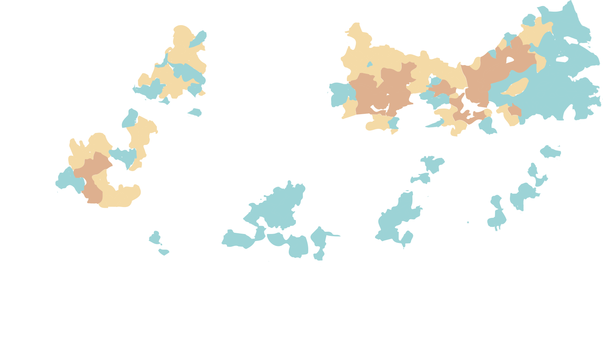
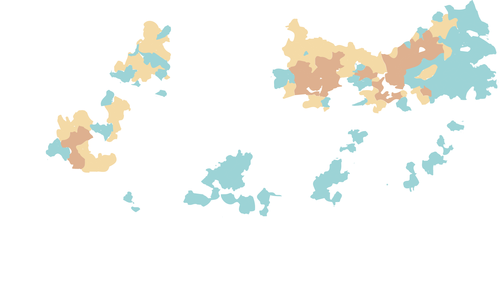

Public toilets in China haven't always been the most welcoming for locals or tourists. "Dirty" and "smelly" were labels visitors often used to describe public facilities, but thanks to decades of hard work China has undergone a toilet revolution in rural and urban areas.
A plan to improve basic sanitary problems in rural areas was launched by President Xi Jinping in 2015, while a goal in cities was set to improve the general quality of toilets.
China’s status in World Bank research on "people using safely managed sanitation services" is on the rise, hitting 72 percent of the population in 2017 up from 60 percent in 2007.
Use of safely managed sanitation services globally (% of population)
Source: The World Bank, 2000-2017
China's rural areas have historically had many "open pit latrines." A major problem with these toilets is feces can't be quickly treated, and this has led to increases in maggots and fecal–oral disease transmission.
This is an issue worldwide. World Health Organization research indicates there were 432,000 diarrheal deaths annually in XXX, and poor sanitation is a major driver in tropical diseases including intestinal worms, schistosomiasis and trachoma.


Building sanitary toilets is central to China's plan to improve conditions and combat disease in rural areas.
The basic requirements for sanitary toilets are that they are enclosed but ventilated, have sealed and covered septic tanks, and there are no fly maggots or persistent odors.
China's fiscal authority plans to allocate seven billion yuan (xxx U.S dollars) to promote toilet renovation in 30,000 villages in 2019, reaching about 10 million farmers across the country.
Basic requirements for a sanitary toilet
Wall
Septic tank
Pit
Sink
Swatter
Window
The upgrading of toilets in rural areas has had multiple benefits. An increase in sanitary toilets has led to a decline in fecal-related diseases like schistosomiasis, for example, and the issue has now been controlled.
"Rural toilet reform can fundamentally control occurrences of intestinal infectious diseases and is the main measure for health and disease prevention," said Fu Yanfen, a researcher at China Center for Disease Control and Prevention.
"Sanitary toilets can protect people from disease so they don't get sick so easily and can go to work regularly,” according to Jack Sim, the founder of World Toilet Organization. “It is beneficial to the economy since they reduce expenses in hospitals and medical investment."
Dropping schistosomiasis diagnoses in South China (2007-17)

 



Source: Chinese Journal of Schistosomiasis Control, 2007-2017
The overall penetration rate of rural sanitary toilets is keep increasing.
Rural areas in Beijing have achieved the greatest increase among all cities and provinces. The penetration rate reaches to 96.6% in 2011 and gets close to 100% afterwards, from 54.09% in 2007.
The upgrade in northeast and northwest China has been more effective despite of the fact that these areas generally have low starting points. After ten years’ improvement, the penetration rate of these provinces is basically rising, but the penetration rate is still generally lower than 50% in 2017, and even some provinces have experienced large fluctuations
In Central China, the rate has increased slightly, placing the middle level of the country.
The provinces in East China have maintained a high penetration rate comparing to other parts (eg. Shanghai ranked first in the country in 2017, with a penetration rate of 99.1%) and a more prominent increase (such as Jiangsu).
The penetration rates of south China and southwest China are steadily going up and there’s no sign of rollback.
Urban public toilets in China have generally been sanitary for many years, so the focus in cities has been on making further improvements under a three-step classification system.
Perfecting sewage systems, exceeding required sanitary conditions, cleanliness, convenience and even aesthetics have become the main goals of the urban toilet revolution.


From 2015 to 2017, the National Tourism Development Fund invested 1.64 billion yuan (xx U.S. dollars) on the tourism toilet revolution. As of 2017, the total number of third- and above class of toilet exceeded 100,000, accounting to about 75 percent of the total number of urban public toilets. The Ministry of Culture has said about 21,000 toilets will be built or renovated at tourist sites in 2019.
“A Gracious Society Embracing Excellence in Restroom Culture.” This is the creed of the Singapore Bathroom Culture Association, which is also in line with China's urban toilet reform. Singapore has even stricter criteria for ranking toilets, earning a glowing reputation for public toilets.
The number of third-class and above urban toilets exceeded 100,000 in 2017
Source: National Bureau of Statistics, data as of 2017
An individual uses toilets six to eight times per day and spends an average of three years in toilets throughout their entire life, according to the Chinese Center for Disease Control and Prevention.
But the Chinese public sometimes asks, “Is it really necessary to invest large sums of money on toilets?”
Why? Because “toilets” have been a taboo subject for many over the past 70 years. In rural areas, villagers’ houses are often neat and modern but their toilets have changed little for decades. In urban areas, toilets are still sometimes seen as a sign of “dirtiness.”
“The main obstruction is how to change people’s mind,” said Sim, who thinks it’s essential to foster a healthier toilet culture in China, arguing it’s beneficial to the economy, health and wellness development in long term.
Qian Jun, known as China’s “Mr.Toilet”, teaches elementary school children about hygiene habits and toilet etiquette. He hopes to influence adult behavior by educating kids first.
“China has achieved great process,” according to Sim, “but it is a long process and China still has long way to go.”